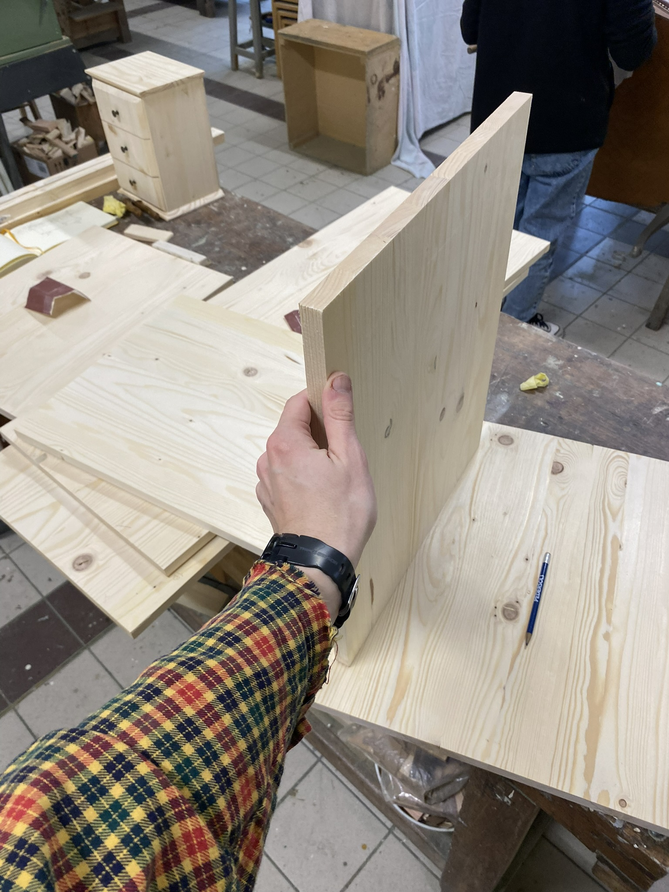
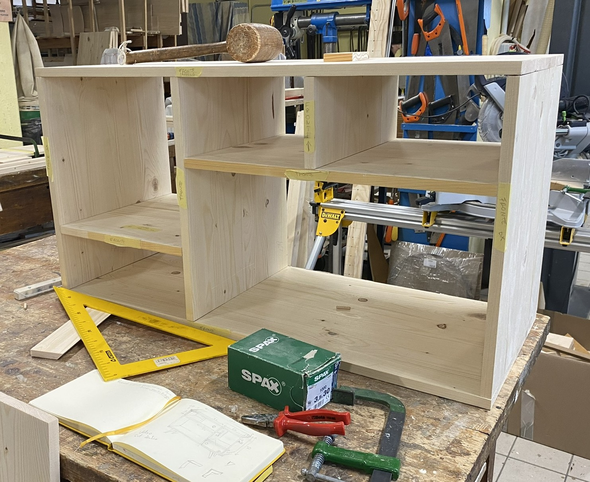
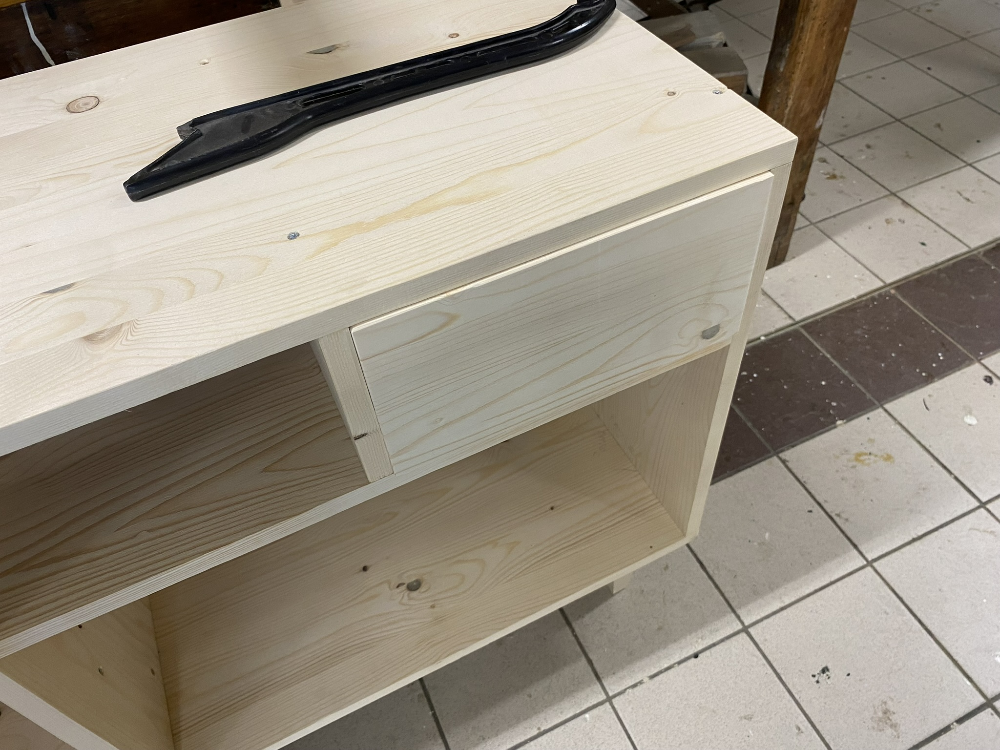

Chest of Drawers ×
Size: 1.5m x 1m, with drawers.
A long project, with the design created from scratch. Every joint is fixed with dowels — there are no visible screws anywhere on the piece except at the legs, where they're hidden from view. Still to be varnished.
Materials: Fir wood
Tools used: jig, table saw, drill, level, hand plane (to keep the joints flat and free of bumps).
Process

1. Cutting the pieces — given how complex the structure is, most pieces had to be cut to the millimeter.

2. Assembling the frame — pieces joined together, drawers not yet in. No screws in the structure — every joint is fixed with dowels, with the dowel holes drilled using a jig.

3. Fitting the drawers — drawers fitted into the frame using internal guides. The only screws on the whole piece are at the legs, and none of them are visible.
Current state
Structure complete, still to be varnished.


 proficient
proficient  native
native intermediate
intermediate  basic
basic